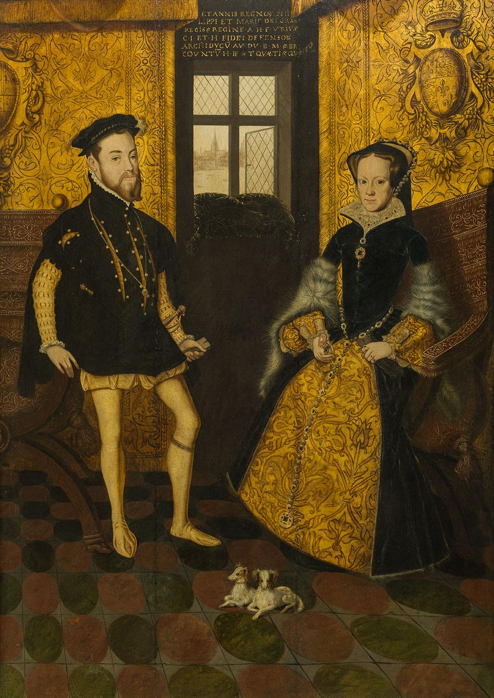
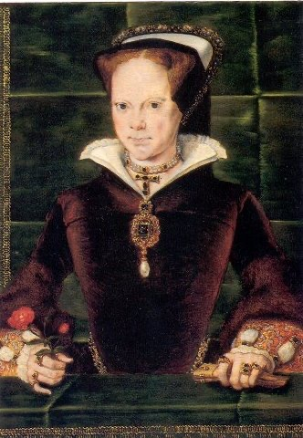

Mary I (18 February 1516 – 17 November 1558) also known as "Bloody Mary" was a queen of England from July 1553 - 17 November 1558. She is best known for her vigorous attempt to reverse the English Reformation, which had begun during the reign of her father, Henry VIII. She was the only daughter of Henry the VIII by his first wife, Catherine of Aragon. She dies 17 November 1558 (aged 42). St James's Palace, London, England, and got buried on the 14 December 1558 Westminster Abbey, London
She was called "Bloody" becuase for her hatred towards Protestants. When she became a queen, she tried to make the country and all the churches Catholic. Before her, her younger brother, Edward VI has changed the churches into Protestant churches. During her 5-year reign, Mary had over 300 religious dissentered burned at stake in what are known as the Marian persecutions.
